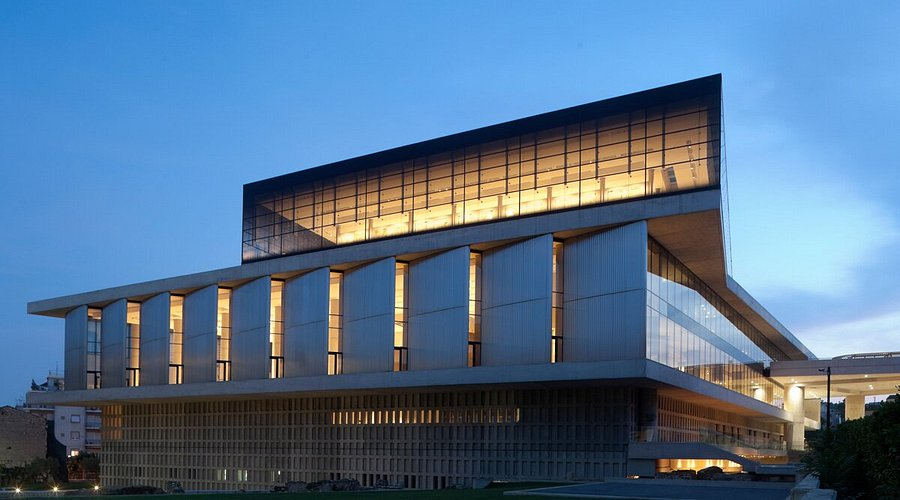
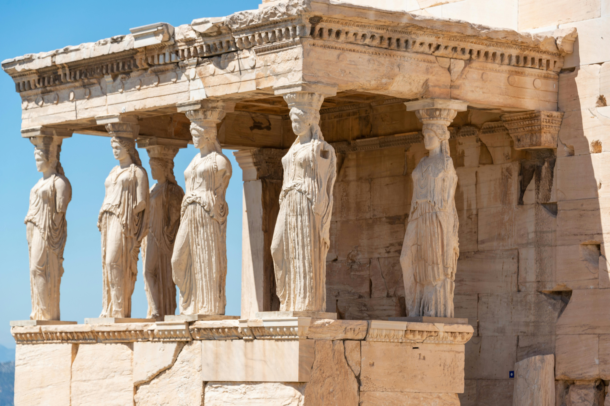
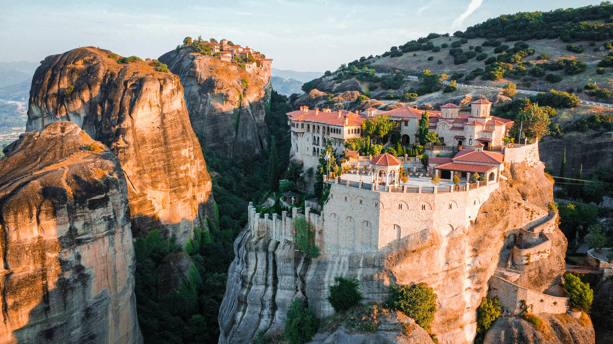
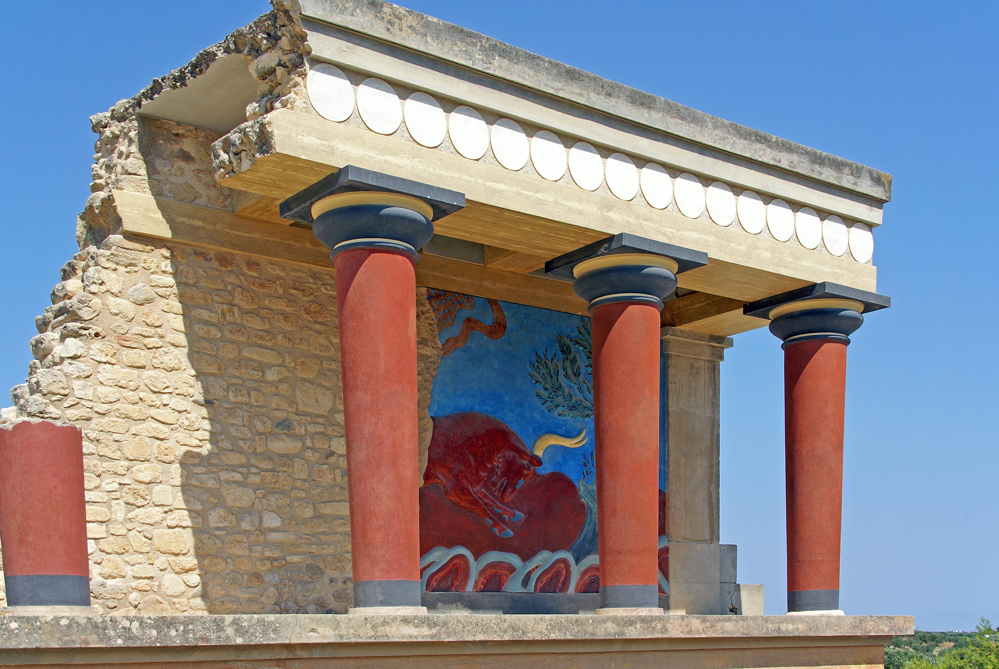

Conheça Alguns Pontos Turísticos
A Grécia é um país repleto de pontos turísticos que oferecem uma rica combinação de história, cultura e paisagens deslumbrantes. Com uma herança que remonta à Antiguidade, suas cidades e ilhas são testemunhas de milênios de civilização, refletindo a grandiosidade da mitologia grega e os avanços da arquitetura clássica.
Museu da Acrópole
Acrópole de Atenas
Santorini

Meteora
Palácio de Knossos
Delphi

Museu da Acrópole
O Museu da Acrópole, localizado em Atenas, Grécia, é um dos museus mais importantes do mundo, dedicado à arte e à arqueologia da antiga Grécia. Inaugurado em 2009, o museu foi projetado para exibir os achados arqueológicos da Acrópole, proporcionando uma experiência única que complementa a visita ao famoso sítio arqueológico.
Principais características:
- Arquitetura Moderna: O edifício foi projetado pelo arquiteto norte-americano Bernard Tschumi e é conhecido por sua estrutura contemporânea que se integra harmoniosamente ao ambiente histórico da Acrópole.
- Coleção de Artefatos: O museu abriga uma vasta coleção de esculturas, relíquias e artefatos que datam desde a pré-história até a época romana. Destaques incluem as famosas esculturas do Partenon, como as metopas, os frisos e as estátuas dos deuses.
- Visibilidade da Acrópole: Uma das características marcantes do museu é a sua localização estratégica, que oferece vistas diretas da Acrópole. O último andar, onde estão expostos os artefatos do Partenon, proporciona uma perspectiva única sobre o templo.
- Interatividade e Educação: O museu é equipado com tecnologias interativas e painéis informativos que ajudam os visitantes a entender melhor o contexto histórico e cultural dos artefatos expostos.
- Pesquisa e Conservação: Além de ser um espaço expositivo, o Museu da Acrópole também se dedica à pesquisa e à conservação de artefatos, desempenhando um papel crucial na preservação do patrimônio cultural grego.
O Museu da Acrópole é uma visita obrigatória para quem deseja aprofundar-se na história da Grécia antiga e apreciar a rica herança cultural do país.
Acrópole de Atenas
A Acrópole de Atenas é um dos sítios arqueológicos mais emblemáticos e significativos da Grécia antiga, situada em uma colina elevada que domina a cidade. É um símbolo da civilização grega e da democracia, refletindo a riqueza cultural e artística de Atenas durante o século V a.C.
Principais características:
- Parthenon: O templo mais famoso da Acrópole, dedicado à deusa Atena, é um exemplo notável da arquitetura clássica. Construído entre 447 e 432 a.C., o Parthenon é conhecido por suas colunas dóricas e esculturas detalhadas.
- Erecteion: Outro templo importante, o Erecteion é conhecido por sua arquitetura única e pelas famosas Cariátides, que são colunas em forma de mulheres que sustentam o teto da estrutura.
- Templo de Atena Nice: Este pequeno templo foi dedicado à deusa Atena como "Nice" (Vitória). É um exemplo de um templo jônico e está situado próximo à entrada da Acrópole, oferecendo vistas deslumbrantes.
- Importância Histórica: A Acrópole não é apenas um marco arquitetônico, mas também um símbolo da democracia ateniense e da cultura ocidental. Durante séculos, foi um local de culto e celebração.
- UNESCO: Em 1987, a Acrópole foi declarada Patrimônio Mundial da UNESCO, reconhecendo sua importância histórica e cultural.
A visita à Acrópole oferece uma oportunidade única de explorar a rica história da Grécia antiga e apreciar a beleza de suas estruturas arquitetônicas, além de proporcionar vistas panorâmicas da cidade de Atenas.
Santorini

Santorini é uma das ilhas mais famosas e deslumbrantes da Grécia, localizada no Mar Egeu. Conhecida por suas paisagens espetaculares, arquitetura única e rica história, Santorini é um destino popular para turistas de todo o mundo.
Principais características:
- Arquitetura Típica: A ilha é famosa por suas casas brancas com tetos azul-escuros, muitas vezes construídas em encostas íngremes. Essa arquitetura pitoresca, especialmente nas vilas de Oia e Fira, cria um cenário deslumbrante.
- Pôr do Sol em Oia: O pôr do sol em Oia é considerado um dos mais bonitos do mundo. Turistas e locais se reúnem para admirar a vista enquanto o sol se põe sobre o mar Egeu, criando uma palete de cores impressionantes.
- Praias de Areia Vulcânica: Santorini possui praias únicas, como a Praia de Perissa e a Praia Vermelha, caracterizadas por suas areias vulcânicas de cores distintas. Essas praias oferecem uma experiência de relaxamento e beleza natural.
- História e Arqueologia: A ilha tem uma rica história que remonta à civilização minóica. O sítio arqueológico de Akrotiri, uma antiga cidade que foi preservada pela erupção vulcânica, oferece uma visão fascinante da vida na ilha durante a Idade do Bronze.
- Vinhos Famosos: Santorini é conhecida por sua produção de vinhos, especialmente o vinho branco Assyrtiko, que se beneficia do solo vulcânico da ilha. As vinícolas locais oferecem degustações e tours, permitindo que os visitantes experimentem os sabores únicos da região.
Santorini é um destino que combina beleza natural, cultura rica e história, tornando-a uma escolha perfeita para aqueles que buscam relaxamento, aventura e exploração.
Meteora
Meteora é uma das joias da Grécia, famosa por suas impressionantes formações rochosas e mosteiros construídos no topo dessas torres de pedra. Localizada na região da Tessália, Meteora é um Patrimônio Mundial da UNESCO e é conhecida por sua beleza natural e importância espiritual.
Principais características:
- Formações Rochosas: Meteora é composta por enormes colunas de arenito que se elevam dramaticamente, criando uma paisagem única. Essas formações rochosas foram moldadas ao longo de milhões de anos pela erosão e oferecem vistas espetaculares.
- Mosteiros de Meteora: Originalmente, havia 24 mosteiros, dos quais seis ainda estão em funcionamento. Os mosteiros, construídos a partir do século XIV, são exemplos notáveis da arquitetura bizantina e serviram como centros de vida monástica e espiritual. Os mais conhecidos incluem o Grande Meteoro, Varlaam e Rousanou.
- Caminhadas e Trilhas: A região é popular entre os amantes da natureza e os caminhantes, com várias trilhas que permitem explorar as formações rochosas e os mosteiros. As trilhas oferecem vistas deslumbrantes e uma experiência íntima com a paisagem.
- Importância Cultural: Meteora tem um significado religioso profundo, sendo um importante centro da ortodoxia grega. Os mosteiros abrigam uma rica coleção de arte religiosa, incluindo ícones e afrescos.
- Turismo e Aventura: Além do turismo cultural, Meteora oferece atividades como escalada e parapente, permitindo que os visitantes aproveitem a beleza da região de maneiras diferentes.
Meteora é um destino que combina natureza, espiritualidade e história, proporcionando uma experiência única para os visitantes que buscam explorar a rica herança cultural da Grécia.
Palácio de Knossos
O Palácio de Knossos é um dos sítios arqueológicos mais importantes da civilização minóica e está localizado na ilha de Creta, Grécia. Considerado o maior palácio da época, Knossos oferece uma visão fascinante da vida e da cultura da antiga Grécia.
Principais características:
- Arquitetura Complexa: O palácio é famoso por sua arquitetura intrincada, com vários andares, salas, corredores e pátios. A estrutura era moderna para sua época, com sistemas de esgoto e aquecimento.
- Cultura Minóica: Knossos foi um centro administrativo e cerimonial da civilização minóica, que floresceu entre 2000 e 1400 a.C. A arte e a cultura minóica são evidentes nas belas pinturas murais e cerâmicas encontradas no local.
- Lenda do Minotauro: O palácio está associado à famosa lenda do Minotauro, um ser mitológico que habitava um labirinto projetado por Dédalo. A conexão com a mitologia grega torna Knossos um lugar de grande interesse cultural.
- Escavações: O sítio foi escavado no início do século XX pelo arqueólogo britânico Sir Arthur Evans, que restaurou partes do palácio. Suas restaurações, embora controversas, ajudam a compreender a estrutura e a função do local.
- Visitação e Educação: Hoje, o Palácio de Knossos é um destino turístico popular, atraindo visitantes interessados em história, arqueologia e mitologia. O local é cercado por painéis informativos que ajudam a contextualizar a história da civilização minóica.
O Palácio de Knossos é uma janela para o passado, oferecendo uma rica compreensão da vida na antiga Creta e seu impacto na cultura grega posterior.
Delphi
Delphi é um dos sítios arqueológicos mais importantes da Grécia, conhecido por sua rica história religiosa e cultural. Localizado nas encostas do Monte Parnaso, Delphi era considerado, na antiguidade, o "umbigo do mundo" e um centro espiritual da civilização grega.
Principais características:
- Oráculo de Delfos: Delphi é famosa por seu oráculo, onde a sacerdotisa Pítia transmitia as profecias de Apolo. Pessoas de toda a Grécia e além viajavam até lá em busca de conselhos sobre questões pessoais e decisões políticas.
- Templo de Apolo: O templo, construído em várias fases, era o centro do culto a Apolo e abrigava a Pítia. A estrutura é um exemplo notável da arquitetura clássica e era adornada com esculturas e inscrições.
- Teatro e Estádio: Além do templo, o sítio inclui um teatro antigo, onde performances e festivais eram realizados, e um estádio que sediava jogos e competições atléticas, como os Jogos Pítios.
- Museu de Delfos: O museu adjacente abriga uma vasta coleção de artefatos encontrados nas escavações, incluindo estatuetas, inscrições e obras de arte que refletem a importância de Delphi na Grécia antiga.
- Patrimônio Mundial da UNESCO: Em 1987, Delphi foi declarado Patrimônio Mundial da UNESCO, reconhecendo sua importância histórica e cultural.
Delphi é um local fascinante que combina história, mitologia e beleza natural, proporcionando uma experiência única para os visitantes interessados na rica herança cultural da Grécia.